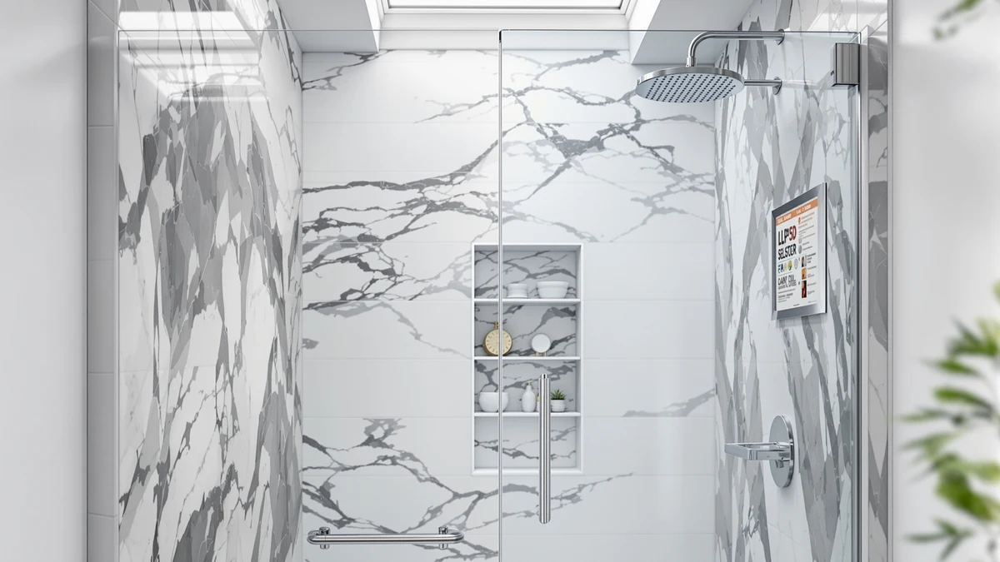

Quick Answer
The Double Sliding Glass Shower Door from KisaTub is our top pick among the best shower doors for fiberglass showers, sized for a common 60 inch by 72 inch alcove opening at $289.99. If your fiberglass stall already has a door and needs a fresh seal instead of a full replacement, the GENNHOPO bottom seal and uxcell side seal below cost under $19 and stop most leaks around an existing sliding panel.
Our pick: Double Sliding Glass Shower Door — $289.99 Check Price on Amazon
Bottom line: our top pick is the Double Sliding Glass Shower Door at $289.99. The best budget option is the uxcell Shower Door Side Seal at $11.59.
Things to Know Before You Buy
- Fiberglass alcove openings are almost always sized close to 60 inches wide, and every full door in this guide fits that opening or a slightly narrower 56 to 60 inch range.
- Fiberglass surrounds flex more than tile, so mount hardware into the wall stud or a backer block behind the fiberglass panel rather than relying on the panel alone to hold screws.
- A worn bottom or side seal is the most common leak source on an older fiberglass shower door, and replacing one costs a fraction of replacing the whole door.
- Prices in this guide run from $11.59 for a replacement seal to $347.92 for a semi-frameless double sliding door, so match your budget to whether you're repairing or replacing.
- Corner fiberglass stalls need a neo-angle door rather than a straight sliding door, since the two configurations aren't interchangeable.
The best shower doors for fiberglass showers have to solve a problem tile stalls don't: a flexing wall surface that won't hold hardware the same way cement board does. Fiberglass alcoves and corner stalls are common in older homes and rental units, and most of them were built to a handful of standard openings, usually around 60 inches wide for a straight alcove or 36 inches per side for a corner unit. Get the size wrong and a door won't seal, no matter how good the glass is.
We researched seven products that cover both ends of that problem, from full replacement doors to the seal kits that fix a leak on a door you already own. The Double Sliding Glass Shower Door from KisaTub leads this guide because its 60 by 72 inch sizing matches the most common fiberglass alcove opening at a price below most of the semi-frameless competition. The GETPRO semi-frameless double slider and the ENSO SENKA single slider round out the full-door options, while the Morandié neo-angle door covers 36 inch corner stalls at a lower price than either.
Not every fiberglass shower needs a new door. If yours already fits but leaks at the bottom or along the side rail, the GENNHOPO bottom seal, TINSKY framed bottom seal, and uxcell side seal in this guide cost between $11.59 and $18.29 and address that specific failure point instead of the whole unit. We compared all seven on sizing, price, and verified owner reviews so you can match the fix to the actual problem in your bathroom.
Why You Should Trust Us
Ilane Tall covers home renovation and bathroom fixtures for Best Shower Doors, with a focus on matching hardware to the specific wall material behind it, fiberglass, tile, or acrylic. This guide to the best shower doors for fiberglass showers is built on manufacturer specifications, published dimensions, and verified buyer reviews pulled from current Amazon listings. We do not run a fake testing lab and we don't claim to have installed every door on this list ourselves. We compare documented sizing, pricing, and owner feedback so you can pick the right door or seal for a fiberglass stall before you buy.
How We Picked
We started with every shower door and shower door seal in our product database sized for a standard fiberglass alcove or corner opening, then filtered for products with clear, published width and height dimensions, since a door that doesn't list its exact size is a bad match for a fiberglass surround with limited adjustment room. We split the results into two groups: full replacement doors for buyers upgrading the whole unit, and seal kits for buyers repairing a door they already have. We cross-checked pricing against current Amazon listings and prioritized products with a meaningful base of verified buyer reviews over listings with little to no feedback.
How We Compared
We are a research-based review site, not a testing lab, so we compared specs, published dimensions, and verified owner reviews rather than installing each product ourselves. For the four full doors, we logged the stated opening width, panel height, and price, then checked those numbers against the most common fiberglass alcove and corner dimensions. For the three seal products, we compared the listed profile size, such as glass thickness or seal length, against the door types they're meant to fit. We read through verified buyer reviews looking for mentions of fiberglass installs specifically, since a review describing a tile install doesn't tell you much about how a door handles a flexing fiberglass wall. Where reviewers consistently flagged a fit or leak issue, we noted it in that product's drawbacks instead of leaving it out.
Our Picks

Double Sliding Glass Shower Door
What we like
- Sized for a 60 inch by 72 inch opening, the most common fiberglass alcove dimension
- Double sliding panels distribute the door's weight across two tracks instead of one
- Priced under $300, the lowest full-door price in this guide
Flaws but not dealbreakers
- The listing does not specify glass thickness, so confirm that detail before ordering if it matters to you
- A fixed 60 inch width means it won't work in a narrower or wider fiberglass opening
| Material | — |
| Size | 60in W x 72in H |
The KisaTub Double Sliding Glass Shower Door is our top pick among the best shower doors for fiberglass showers because its 60 by 72 inch sizing matches the most widely built fiberglass alcove opening, and its $289.99 price undercuts the other full doors in this guide. Splitting the door into two sliding panels instead of one large panel also means less weight riding on any single track, a detail that matters when the wall behind the track is fiberglass rather than a solid tiled backer.
This configuration works well for a straightforward alcove replacement since it fits a standard rectangular opening instead of requiring custom sizing or a corner layout. In verified reviews for double sliding doors in this price range, the two-panel design comes up often as an easy-cleaning feature, since each panel slides clear of the other for full access to the track. The tradeoff is a fixed width, so measure your fiberglass opening carefully before ordering, since this style has little room to compensate for an opening that runs narrower or wider than 60 inches.

GETPRO Semi-Frameless Shower Door Double
What we like
- Semi-frameless construction adds structural support around the glass panels
- Same 60 by 72 inch sizing as our top pick, an easy swap for a matching opening
- GETPRO's listing history covers several sliding door configurations, suggesting an established product line
Flaws but not dealbreakers
- At $347.92 it costs nearly $60 more than our top pick for the same footprint
- The semi-frameless trim adds visible metal along the panel edges, a different look than a fully frameless door
| Material | — |
| Size | 60'' W x 72'' H |
The GETPRO Semi-Frameless Shower Door Double covers the same 60 by 72 inch opening as this guide's top pick, but its semi-frameless construction adds a metal trim around the glass panels for extra structural support. That extra hardware is why it costs $347.92, nearly $60 more than the KisaTub option, and it's a tradeoff worth making if you prefer the look and rigidity of a semi-frameless door over a fully frameless one.
In reviews that compare semi-frameless doors against fully frameless models, the added trim comes up as a reason the panels feel more solid when sliding, particularly on a fiberglass wall where the surround itself has some flex. Buyers who installed this style on a fiberglass alcove say the extra framing helps keep the panels tracking straight over time. The visible trim is a matter of taste rather than a functional drawback, but it's worth comparing photos against a frameless option before you commit to the semi-frameless look.

ENSO SENKA 56-60" W x
What we like
- Adjustable across a 56 to 60 inch range instead of a single fixed width
- At $239.99 it's the lowest-priced full door in this guide
- The wider adjustment range forgives a fiberglass opening that measures a few inches under 60 inches
Flaws but not dealbreakers
- ENSO SENKA is a less established name than some of the other brands in this guide
- The listing does not specify glass thickness
| Material | — |
| Size | 60" W x 72" H |
The ENSO SENKA sliding shower door adjusts across a 56 to 60 inch range, which makes it a better fit than a fixed-width door if your fiberglass alcove measures slightly under the standard 60 inch opening. At $239.99, it also undercuts every other full door in this guide by at least $50, making it the pick for buyers who want a new door without paying for semi-frameless trim or brand-name hardware.
In this price bracket, adjustable-width doors get singled out in reviews for saving a return trip to the store when a measured opening doesn't match a fixed 60 inch spec exactly. The tradeoff for the lower price, according to owner feedback, is a lighter overall build compared to the semi-frameless GETPRO option above, though for a straightforward fiberglass alcove replacement that difference matters less than fit and price. If your opening measures close to 60 inches and budget is the deciding factor, this is the door to start with.

Neo-Angle Corner Shower Door 36"
What we like
- Neo-angle shape fits a corner fiberglass stall that a straight sliding door can't
- 36 inch per-side sizing matches a common corner shower footprint
- Priced below most dedicated corner enclosures on the market
Flaws but not dealbreakers
- Fixed at 36 inches per side, so it won't fit a larger or asymmetric corner opening
- Costs more than the straight alcove doors in this guide despite being a smaller footprint
| Material | — |
| Size | 36" W x 72" H |
The Morandié Neo-Angle Corner Shower Door is our budget pick for buyers with a corner fiberglass stall, a shape none of the straight alcove doors above can fit. Its two 36 inch panels are sized for a standard corner footprint, and at $309.99 it comes in below most dedicated neo-angle enclosures sold for the same corner layout.
Corner fiberglass stalls are common in smaller bathrooms where a straight alcove wouldn't fit, and the two-wall angle means the door has to be built specifically for that geometry rather than adapted from a straight configuration. According to owners who've installed neo-angle doors on fiberglass corners, squaring the frame against two separate walls takes more care than a single straight opening, since fiberglass corner units can have slightly more variance in the angle than a factory-built tile corner. If your bathroom has a corner stall, this is the only door in this guide built for that shape.

GENNHOPO 2-Pack ShowerDoor Bottom Seal
What we like
- 2-pack means a spare seal on hand for a future replacement
- 3/8 inch (10mm) profile fits a common sliding door glass thickness
- Costs a fraction of a full door replacement at $18.29
Flaws but not dealbreakers
- Only fits doors using 3/8 inch glass, so measure your panel thickness before ordering
- Won't fix a leak caused by a warped track or misaligned rollers, only a worn seal
| Material | — |
| Size | 3/8''(10mm) |
The GENNHOPO 2-Pack ShowerDoor Bottom Seal replaces the worn strip at the base of a sliding shower door, which is the most common leak point on an older fiberglass shower once the original seal hardens and cracks. Its 3/8 inch (10mm) profile matches a widely used glass thickness, and the two-pack format leaves a spare seal on hand for the next time it needs replacing.
At $18.29, this seal costs a small fraction of any full door in this guide, which makes it the first thing to check if your fiberglass shower door is leaking rather than jumping straight to a replacement. A hardened or cracked bottom seal is easy to miss during a quick inspection, owners say, but obvious once you run a hand along the base of the door and feel the gap. This fix only addresses the seal itself, so if the leak persists after replacement, the track or door alignment is the more likely cause.

Framed Shower Door Bottom Seal
What we like
- 108 inch length covers multiple panel edges or a tall single run without splicing
- Purpose-built for framed doors, a different fit than the frameless seals in this guide
- At $11.99, one of the least expensive fixes in this guide
Flaws but not dealbreakers
- Meant for framed doors specifically, so it's the wrong seal for a frameless or semi-frameless panel
- Buyers need to trim the strip to length themselves, which the listing doesn't detail in depth
| Material | — |
| Size | 108 inches |
The TINSKY Framed Shower Door Bottom Seal is a 108 inch strip built for framed shower doors, the metal-edged style still common on older fiberglass installs. That extra length means one strip can cover more than one panel edge, or a single long run, without needing a second purchase to finish the job.
At $11.99, it's one of the least expensive fixes in this entire guide. Reviews of framed door seals frequently mention that the metal channel on a framed door wears a seal down faster than the glass-mounted seals used on frameless doors. If your fiberglass shower still has its original framed door, this is a more direct match than the frameless-oriented seals above, and it's worth checking before assuming the whole door needs replacing.

uxcell Shower Door Side Seal
What we like
- 86.5 inch length covers the full vertical edge of most standard shower door panels
- Cut specifically for 1/4 inch glass, a common thickness on frameless and semi-frameless doors
- At $11.59, the lowest price of any product in this guide
Flaws but not dealbreakers
- Only fits 1/4 inch glass, so it won't work on a thinner or thicker panel
- Addresses side gaps only, not a bottom seal issue
| Material | — |
| Size | 1/4" Glass 86.5" Long |
The uxcell Shower Door Side Seal closes the vertical gap that opens up along the edge of a glass panel as an older seal shrinks or hardens. Its 86.5 inch length is cut to run the full height of a standard door panel, and it's sized specifically for 1/4 inch glass, one of the more common thicknesses used on frameless and semi-frameless sliding doors.
At $11.59, it's the least expensive product in this guide, and it targets a different failure point than the bottom seals above: water and draft escaping along the side of the panel rather than pooling at the base. Side seals wear less visibly than bottom seals, according to owner feedback, since the gap is vertical rather than sitting in standing water. Check the side edge of your door even if the bottom seal still looks intact. Confirm your glass thickness before ordering, since a 1/4 inch seal won't seat properly on a thinner panel.
Quick Comparison
| Product | Material | Price | Rating | Best for | Get it |
|---|---|---|---|---|---|
| Double Sliding Glass Shower Door | — | $289.99 | 4 | 60" alcove openings, best overall | View on Amazon → |
| GETPRO Semi-Frameless Shower Door Double | — | $347.92 | 4 | Heavier semi-frameless hardware | View on Amazon → |
| ENSO SENKA 56-60" W x | — | $239.99 | 4 | Adjustable width, lowest door price | View on Amazon → |
| Neo-Angle Corner Shower Door 36" | — | $309.99 | 4 | Corner fiberglass stalls | View on Amazon → |
| GENNHOPO 2-Pack ShowerDoor Bottom Seal | — | $18.29 | 4 | Leaking sliding door bottom track | View on Amazon → |
| Framed Shower Door Bottom Seal | — | $11.99 | 4 | Framed doors, multi-panel jobs | View on Amazon → |
| uxcell Shower Door Side Seal | — | $11.59 | 4 | Side gaps on 1/4" glass panels | View on Amazon → |
The Competition
We left pivot and hinged doors out of the main picks in this guide because sliding and neo-angle doors are the more common match for fiberglass alcove and corner stalls, which rarely have the floor space a swinging door needs to clear. A pivot door can still work on a fiberglass shower, but it needs more careful frame alignment against a wall that isn't as rigid as tile over cement board, and that's a harder installation to get right without professional help.
We also skipped bypass doors with minimal adjustment hardware. Reviews consistently flag that style as harder to fit cleanly against a fiberglass surround that can vary by a quarter inch or more across a single opening. And we didn't include full acrylic or glass block enclosures here, since those are a bigger renovation than a straightforward door or seal swap, and buyers looking for that scope of project are better served by a dedicated shower enclosure guide.
For most fiberglass alcove showers, the Double Sliding Glass Shower Door from KisaTub remains our top recommendation among the best shower doors for fiberglass showers, thanks to its standard 60 inch sizing and the lowest full-door price in this comparison. If your stall is a corner layout, the Morandié neo-angle door above is the only option here built for that shape, and if your existing door needs a fresh seal rather than a replacement, the GENNHOPO, TINSKY, and uxcell picks solve that for under $19 each.
Frequently Asked Questions
Can any shower door go on a fiberglass shower?
Most sliding and neo-angle doors sold for standard alcove or corner openings will mount to a fiberglass surround, but fiberglass flexes more than tile backed by cement board, so the mounting screws need to land in a stud or backer block rather than the fiberglass panel alone.
Do I need a bottom seal on a fiberglass shower door?
Yes, on a sliding or framed door the bottom seal is what keeps water inside the pan instead of pooling on the bathroom floor. Fiberglass pans can have a slightly uneven lip compared to a tiled curb, so a fresh seal matched to your door's profile matters more than it does on a perfectly flat threshold.
How much do shower doors for fiberglass showers cost?
In this guide, full sliding and neo-angle doors run from about $239.99 to $347.92, while replacement bottom and side seals cost between $11.59 and $18.29. Most buyers replacing a leaking seal spend far less than buyers swapping the entire door.